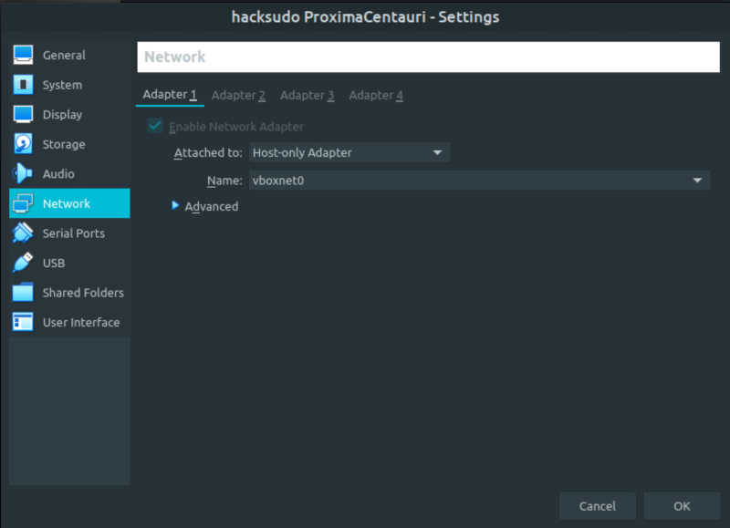
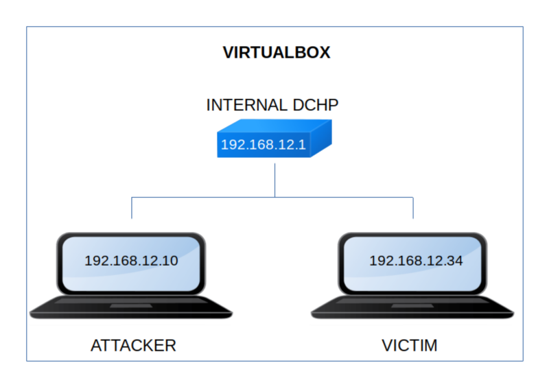

Hacksudo ProximaCentauri
▸ Hacksudo ProximaCentauri
▸ 1. Scan Network
▸ 2. Finding Services and Ports
▸ 3. Enumerate
▸ 3.1 Webserver with Gobuster
▸ 3.2 Port Knocking Sequence
▸ 4. Exploitation
▸ 4.1 Connecting via SSH
▸ 4.2 Exploit the password
▸ 4.3 Search exploit for pluck 4.7.13
▸ 4.4 Get user’s shell (First flag)
▸ 4.5 Connect to Mysql
▸ 4.6 Connect via SSH (Second flag)
▸ 5. Privilege Escalation
▸ 5.1 Scan the file system for files with capabilities
▸ 5.2 Catch the thrid flag
Difficulty: Medium.
Flag: 3 flagS.
Learning:
• Reconnaissance
Scan Network
Find services
• Enumerate
Webserver with Gobuster
Port knocking
• Exploitation
Connect via SSH
Exploit the password
Search exploit for pluck 4.7.13
Get user's shell
Connect to Mysql
• Privilege Escalation
Scan the file system for files with capabilities with getcap
• Download (Mirror): https://download.vulnhub.com/hacksudo/hacksudo-ProximaCentauri.zip
• Download (Torrent): https://download.vulnhub.com/hacksudo/hacksudo-ProximaCentauri.zip.torrent
Install the machine on VirtualBox:
1. Download the file and extract it.
2. On Virtualbox choose File->Import Appliance.
3. Select the file “ova”.
4. Accept to import.


Watch your Machine IP.
$ ifconfig
Output:

Diagram
